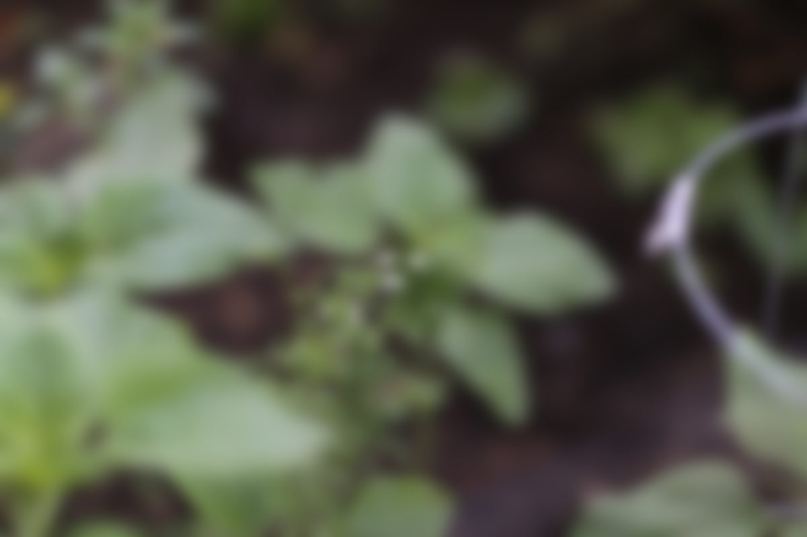
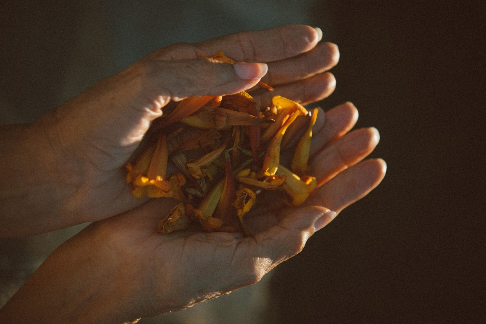
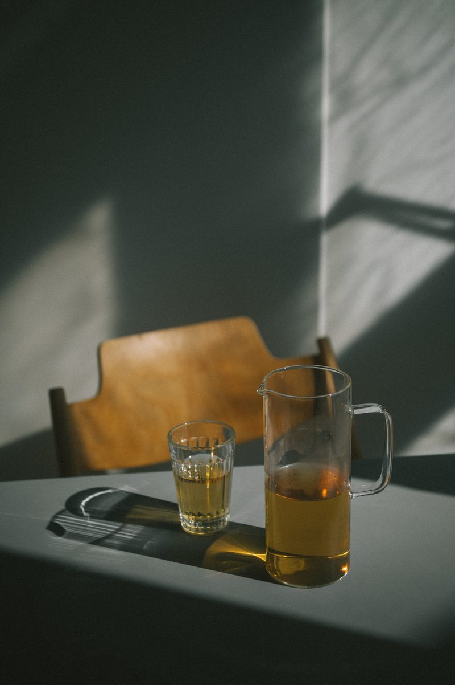
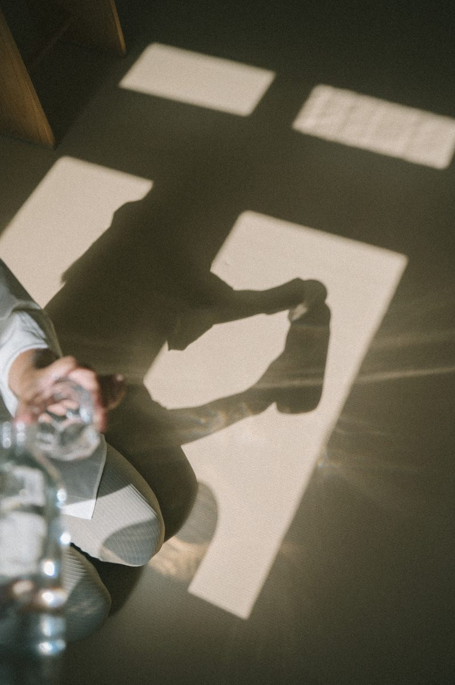
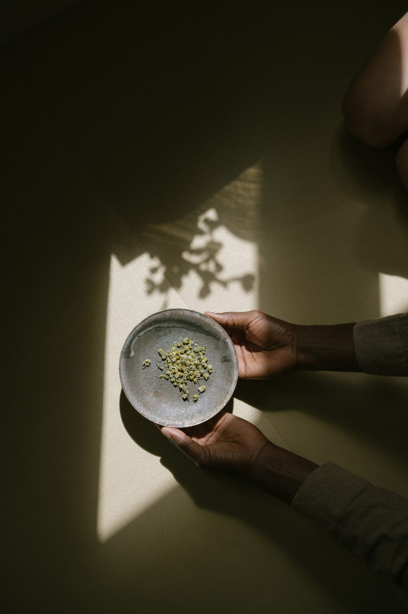
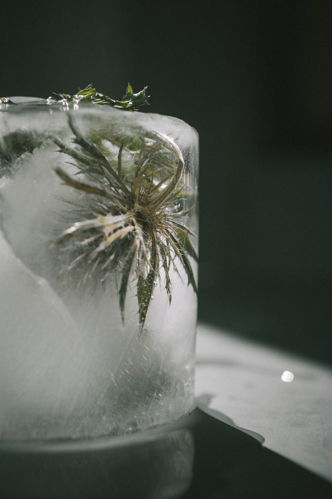
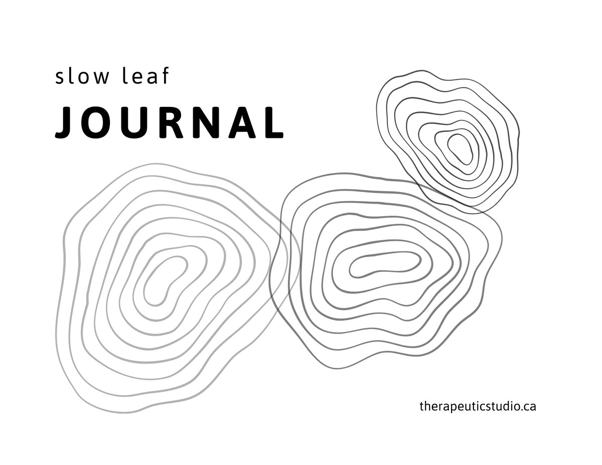

Therapeutic StudioA tea practice
A series of tea experiences, where the leaf is the other body. Therapeutic Studio works with the natural world as company for what we feel — not as a symbol for it, but as a body that has been through something like it, for far longer than we have. The tea leaf has been through a great deal: withered, rolled, oxidised, roasted, aged, until one plant became many. It knows something about carrying a complicated thing. Here, we sit with it, and let it keep our feelings company.

Other bodies of the natural world are not metaphors for what we feel. They are sites of wisdom. Each has been doing something structurally like a human emotion for far longer than there have been humans to feel it — and sitting with what it actually does can make your own version of that emotion easier to be with. Not easier to solve. Easier to keep company with.
The tea leaf belongs in that company. A feeling is rarely one clean thing. It is oxidised, layered, changed by everything it has moved through, and it arrives tasting of more than one note at once. The leaf knows this in its own body. So a sitting with tea becomes a place to let a complicated feeling stay complicated, without hurrying it toward a name.
And when a name does come, we hold it in pencil, making marks together. A feeling is built in the moment more than it is found waiting underneath — so you might come to a sitting expecting one thing and meet another. That isn't a mistake to correct. Attunement is staying long enough to feel what is genuinely there, and the tea is there for that staying.
Each sitting is its own. The same tea, the same room, the same people never quite meet again; the atmosphere shifts with the moment and the season. Nothing is kept, judged, or performed. The tea is drunk, and it is gone — which is also true of the feeling, and part of what the leaf has to teach.
This is an invitation, peer to peer. I'm learning these teas as I go, a student among older traditions — Japanese chanoyu, Chinese gongfu, South Asian chai among them — borrowing their ethic of presence and hospitality while naming where they come from and staying a learner rather than claiming mastery. You don't need to know anything about tea to begin. You need a cup, a little time, a pencil and a page, and a willingness to notice what arrives.

The making here is done with a pencil, in a journal — graphite and paper, nothing more. Not because it's simpler than paint, but because of what graphite is. It darkens where the hand bears down and thins to almost nothing where it lifts, so how you are shows up in the line whether you meant it to or not. It smudges — spreads under the side of the hand, won't quite stay where it was put. And it never fully erases; the pressure stays pressed into the page, a ghost of the mark you tried to take back. That last part is the point. We hold feelings here in pencil, not in ink — named lightly, allowed to be wrong, open to revision as the year turns — and the pencil is the hand's version of that same promise. Nothing is committed. Everything can be reconsidered. And still, what was there leaves its trace.
So this isn't drawing. You're not trying to make a picture of the leaf, or of the feeling, or anything that holds together or looks like something. You're following — letting a slow, unlifted line move the way the feeling moves: doubling back, pressing dark, wandering off, returning. If the line stays a line and never turns into a rendering, it's doing exactly what it's for. Let the graphite resist you a little, and let the emotion, and the leaf, lead the hand.
Four ways in

Twelve months, twelve teas — a year that moves from the familiar toward the more involved, each month's tea met by what's in season around us.
See more
How to make it, slowly. Preparations gathered by the kind of tea in your cup — each with its traditional vessel, its unhurried steps, and gentle prompts.
See more
Why does tea matter — not the leaf alone, but everything people do around it? A map of tea's science, history, language, and ritual.
See more
The world, read one leaf at a time. A map where every place that grows tea carries its own language, its own vessels.
See more
A companion journal for the Tea Room — printable pages to keep beside each sitting, for whatever wants noting: a memory that surfaced, the mood you came in with, where the tea landed in the body, what stayed after the cup was empty. Nothing to complete. Just a place to leave a mark, in pencil, as the year unfolds. Download it, print the pages you need, and begin with whichever tea the month brings.
Download the journal